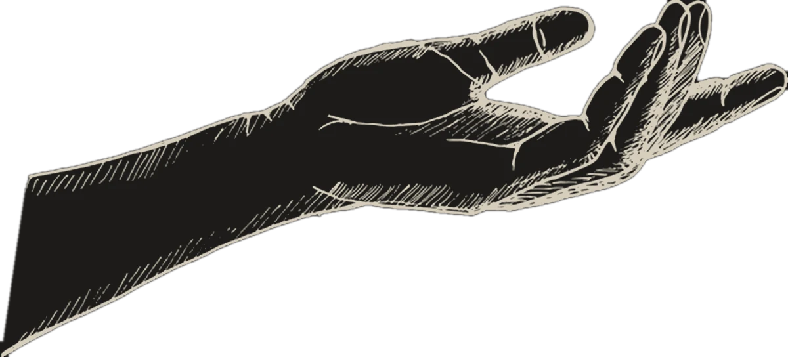

CONTACT

Hi, I’m Jan Pilik.
I build large‑scale software products end to end
Design·Architecture·Full stack·Tests & CI/CDSANGLOGIUM.COM
E-commerce platform
1Engineer
24Months
17Features
650+Products
0:00 / 0:14

SEE IT LIVE